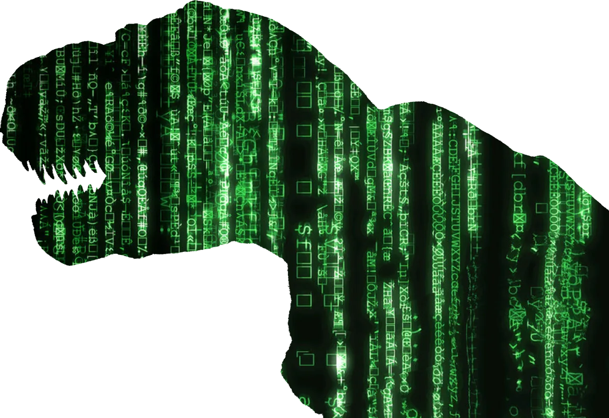

library(magick)Linking to ImageMagick 6.9.12.3
Enabled features: cairo, fontconfig, freetype, heic, lcms, pango, raw, rsvg, webp
Disabled features: fftw, ghostscript, x11# Also save some variables.
col_matrix <- "#00dc00"![]()
This tutorial provides a detailed step-by-step process that demonstrates how to use R and Imagemagik to produce a Matrix-like image as well as highlights some key take away lessons I learnt from this experiencefrom doing that.
The iconic film series “The Matrix” (and sequels) can be recognized by a number of technical and aesthetical features, but probably, the most unique one is their green cascading code1 that is present throughout the films and also its promotional imagery and fanart.
1 Actually, I have to admit that I find this resource as an excellent metaphor about how coding works. In those films, the Matrix (i.e., the software ruling the virtual world where humans are trapped) is often represented as a series of illegible combinations of green symbols (Figure 1 (a)). This is, Matrix’s binary code. In a crucial moment of the first film, the main character has a revelation-like moment where he can suddenly understand (de-compile) the code and he can not only “see” what the code does (Figure 1 (b)), but also become extremely powerful: by manipulating the rules (compiling) he can do things no other human can.
It is no wonder, then, that the Internet is flooded by a number of tutorials or even web tools aimed at reproducing those aesthetics. However, all of them require Image Editing software such as Photoshop, like this excellent tutorial from Abbey Esparza which was an inspiration for me.
In this case, however, I will not be using any editing software. Instead, I will be solely using code to produce a Matrix-like image like the one below (Figure 2), and some bonus output, too. Specifically, I’m going to use R and {magick}, which is an R interface for Imagemagik developed by the rOpensCi community.
Before starting with the tutorial, though, I need to be crystal clear. I do not think that R and any of their image-manipulation packages or, more generally, a programming language, can fully replace an image editing software such as Photoshop or GIMP2. After all, they are made for different purposes and with different audiences in mind.
2 GIMP is an excellent Free/Libre OpenSource software for image manipulation, very similar (feature-wise) to Photoshop. You can visit the official website https://gimp.org

However, that doesn’t mean that using R for handling images doesn’t make sense at all. On the contrary! There are a number of cases where manipulating images from code makes a lot of sense:
Therefore, this tutorial is a proof of concept and a demonstration about how can R be used for creative tasks and manipulation. It is also an exploration of the limits3.
3 Given my background as an architect, I’ve used Photoshop and GIMP extensively in the past, with a great deal of success. However, as someone who is interested in coding, I could see how destructive and non-reproducible the workflows can be. So, this is also a selfish exercise where I wanted to see how far I could go using R in a creative context and understanding their limits.
When thinking about the first image for my pixelfed account on data visualisation, it was clear to me that I had to start with a mention to the work of Justin Matejka and George Fitzmaurice with their Datasaurus Dozen (Matejka and Fitzmaurice 2017) to demonstrate the importance of Data Visualisation to detect patterns in data that summary statistics cannot reveal. But because I was also aware that this is a well-known topic within the field, which has received quite a lot of attention, I wanted to find a different image to those illustrating the blog posts accompanying an explanation.

So when reflecting on how to represent a dinosaur hidden in data, or images appearing out of a messy dataset, I suddenly remembered the Matrix scene where Neo learns how the Matrix works and how, immediately, what used to be inscrutable code turns into recognizable images.
I was immediately seduced by the idea of creating a Dinosaur (ideally similar to that in the datasaurus) emerging from what could be a Matrix-like dataset, and using data visualisation tools for that seemed the most logic (and most meta) thing to do. The text describing that (with a pun) just emphasizes that idea.
I started the process with the following outline in mind:
As you will see, it turned out to be more complex (I needed to create more intermediate steps), but the essence is the same. The GIF4 below is probably the best description of what we are going to do.
4 This GIF has also been generated with R, refer to Section 3.11 for details.

in this case, we will only be using a single library: {magick}, developed by Jeroen Ooms. According to its website, [Magick provides]:
Bindings to ImageMagick: the most comprehensive open-source image processing library available. Supports many common formats (png, jpeg, tiff, pdf, etc) and manipulations (rotate, scale, crop, trim, flip, blur, etc). All operations are vectorized via the Magick++ STL meaning they operate either on a single frame or a series of frames for working with layers, collages, or animation. In RStudio images are automatically previewed when printed to the console, resulting in an interactive editing environment.
So the only thing we need to do is installing the package normally and then adding a call to library() at the beginning of our document:
library(magick)Linking to ImageMagick 6.9.12.3
Enabled features: cairo, fontconfig, freetype, heic, lcms, pango, raw, rsvg, webp
Disabled features: fftw, ghostscript, x11# Also save some variables.
col_matrix <- "#00dc00"Note that because magick is just an interface, we need to have ImageMagick library installed in our system if it’s not already installed (i.e., in Linux Machines). magick’s Readme file covers that https://docs.ropensci.org/magick/articles/intro.html#installing-magick
Only two images are needed for this tutorial: a background image and a dinousaur with a transparent background5. I downloaded the T-Rex image from Unsplash (thanks to the author, Amy-Leigh Barnard, for releasing it under the Unsplash License), and I fond the matrix-like background using DuckDuckGo’s search for Images under Creative Commons, which pointed me towards Peter DeHaas’ website.
5 Actually, the dinousar image is the only image I failed to generate using R. I used GIMP to create an alpha channel and remove the background from the original Photo by Amy-Leigh Barnard on Unsplash:
You can read a tutorial on how to do that using GIMP here: https://www.guidingtech.com/remove-background-gimp-layer-mask/
So, once we get the images stored in a folder within our project, we need to load them to R’s environment:
# Load images
dino <- image_read("img/amy-leigh-barnard-SByb8Ch9XcQ-unsplash.png")
matrix_bg <- image_read("img/matrix01.webp")
# Put them together in a vector
images_clips <- c(dino, matrix_bg)
# Display the images side by side
image_append(image_scale(images_clips, "x200"))# Display images' properties
print(images_clips) format width height colorspace matte filesize density
1 PNG 4608 3072 sRGB TRUE 8293810 72x72
2 WEBP 2000 1000 sRGB FALSE 373842 72x72
Note the different output from calling the images directly or using print(): the first one displays the image, whereas the later will show the image’s properties as well as the image. There are two things that it’s worth paying attention to judging from the images’ properties:
Due to the dinosaur being considerable larger than the background, we need to resize the image before combining them. There are a number of ways to alter the size of an image (with or without distortions)6, but we will be using image_scale():
6 For an explanation of the available options, refer to https://docs.ropensci.org/magick/reference/transform.html
# Remove the extra background.
dino <- image_trim(dino)
# Scale proportionally to a height of 800px.
dino <- image_scale(dino, "x800")Because the dinosaur doesn’t have any background, we can combine them by overlying it on top of the background using image_composite():
image_composite(matrix_bg, dino)Pay attention to the order of the images, as it does matter! The first one will be placed on top of the second.
image_composite(dino, matrix_bg) 
Actually, this output is very similar to something we will want to achieve at a latter point.
As you can see, by default composite image gets the size of the first image and adds a second one aligned from its top left position. Because both images have different sizes, the dinosaur seems to be floating. We can control the alignment using the gravity pattern, which accepts several strings7.
7 For the full list of accepted strings refer to this page at ImageMagick’s documentation https://www.imagemagick.org/Magick++/Enumerations.html#GravityType
# We can use gravity to control alignment
image_composite(matrix_bg, dino, gravity = "SouthEast") Now it’s slightly better, but the dinosaur stands out too much, and it is clear that there are two juxtaposed images that have nothing to do one with each other. We will try to address that by:
One of the outstanding features of The Matrix imagery is by the absence of colors except for green and black. This effect has been accentuated over time (see Figure 8 ), and has often implied using dessaturated images (the clearer examples are Figure 8 (c) and Figure 8 (d)). We are going to try to achieve that with our dinosaur.
.png)
.png)
.png)
.png)
The most immediate way to remove the colours from an image is to convert it to a grayscale image:
# Convert to grayscale
dino_grey <- image_quantize(dino, colorspace = 'gray')
dino_greyAn alternative that gives more control is to change saturation. Moving the saturation somewhere between 100 (maximum value: all colors) and 1 (minimum value: grayscale) gives more control and interesting results.
# Or better, partially dessaturate the image
dino_grey2 <- image_modulate(dino, saturation = 20)
dino_grey2image_modulate(dino, saturation = 20, brightness = 200)This result is probably more similar to Figure 8 (d)
# We can use gravity to control alignment
image_composite(matrix_bg, dino_grey, gravity = "SouthEast") This is getting better, but probably, it would be even better if the dinosaur was greener (something similar to Figure 8 (c) . One way to do that could be by colorizing the image:
# We can use image colorize with low opacity values
dino_green <- image_colorize(dino_grey2, opacity = 40, color = "#379b47")
dino_greenLet’s see how it looks when combined with our background.
image_composite(matrix_bg, dino_green, gravity = "SouthEast") Regretfully, this doesn’t look particularly good: the dinosaur’s details seemed veiled (actually, that’s what we did: we covered the dinosaur with a thin, green veil).
We are going to use a slightly different approach now. This time we will be combining a greyscale version with a green image, but using multiply as the blend mode. Multiply will keep the same details of the original image, but will result in a darker image (which in this case, is also desired!)8 . Also, because we do not have a green image, we will need to create one from scratch using image_blank():
8 For more information about multiply blend mode, refer to this tutorial https://digital-photography-school.com/multiply-blend-mode/ . Also, the wikipedia has information about different blend modes, including, but not limited to, multiply: https://en.wikipedia.org/wiki/Blend_modes
# We need to create an image of the same size with just colour green.
green_img <- image_blank(2000, 1000, color = col_matrix)
# Combine two images using Multiply blend mode.
dino_green2 <- image_composite(dino_grey2, green_img, operator = "Multiply")
dino_green2As you can see, this dinosaur is darker and their details (shades) don’t look so washed away as the previous one (Figure 10). Regretfully, the colour is also added to the background, which used to be transparent, so we will need to restore the alpha channel. We will do that by creating yet another composite, but using copyopacity operator this time to copy the alpha channel from the original dinosaur.
# Restoring alpha channel.
dino_green2 <- image_composite(dino_green2, dino, operator = 'copyopacity')
# Compare results
image_append(image_scale(c(dino_green, dino_green2), "x250"))And now, we can combine the green dinosaur with the background:
image_composite(matrix_bg, dino_green2, gravity = "SouthEast") Because we wanted to recreate the effect on Figure 1 (b) that suggests that the dinosaur is also made of code, we will need to over impress the source code over the T-Rex. To do that, we could apply the same technique we used for Figure 13 and merge the background with the dinosaur using the copyopacity operator.
dino_matrix <- image_composite(matrix_bg, dino_green2, operator = 'copyopacity',
gravity = "SouthEast")
dino_matrixWe are almost there! We have the code applied to the dinosaur, but the texture and details have been lost, only its silhouette has been preserved! We will combine two images, but using the dissolve blend mode:
dino_matrix <- image_composite(dino_matrix, dino_green2, compose_args = "60%",
operator = "dissolve", gravity = "SouthEast")
dino_matrixThis looks nice9, so now we can combine that with the background:
9 Probably, the dinosaur is too green now. If that’s the case, we could try to overlay the code on top of the grey dinosaur or the slightly dessaturated version, instead of the green T-Rex. However, for the sake of better illustrating the next step, I will be using this version.
image_composite(matrix_bg, dino_matrix, gravity = "SouthEast") The resulting image is way less impressive that what he had imagined, right? Why isn’t it looking as good as the previous compositions if the dinosaur with the code looked even better than the previous ones? Basically, the problem is that because we have used the same image for the background and as a texture over the dinosaur, the background and foreground are matching and it seems we just added it on top of a green dinosaur, which is not what we wanted to achieve (it seems that there’s a dinosaur behind a curtain of raining letters).
There are different ways to overcome that issue:
In order to make the background look like a different image than the code from the foreground, we are going to do these two transformations:
Because this is getting long, I’m becoming lazier, and in this case I will use the pipe operator to chain several transformations and I will also use image_flop() instead of moving the background using some of the image transformations provided by {magick}
matrix_bg2 <- matrix_bg %>%
image_flop() %>% # This creates a vertical mirror, which is a lazy way to move the background
image_blur(10, 10)
image_composite(matrix_bg2, dino_matrix, gravity = "SouthEast") Now we can see that dinosaur! However, I realised that in some recent posters, the images are not completely green, but have some greyish texture. We could try to do the same, but instead of having an entirely green dinosaur, using one of the grey versions with code overlayed on them.
dino_matrix2 <- image_composite(dino_matrix, dino_grey2, compose_args = "40%",
operator = "dissolve", gravity = "SouthEast")
image_composite(matrix_bg2, dino_matrix2, gravity = "SouthEast") Way better now! We can see that the dinosaur now stands out against the background, but we could do better: we could add a light green glow around the dinosaur, just like the original imagery does.
This is probably one of the trickiest parts of this tutorial. Imagemagik (and therefore, {magick}) allow a limited range of effects (check all of them here), but none of them consists of projecting an inner or outer glow, which is what you’d do in Photoshop or GIMP. For a while I played with the idea of projecting an outer shadow using image_shadow() (but it would only project square shadows) or image_shadow_mask() but only seems to work for vector images.
So, instead, we will be achieving that in several steps:
# Create a glow effect
dino_glow_tmp1 <- dino_green %>%
image_colorize(color = "#00dc00", opacity = 100) %>%
image_blur(200, sigma = 20)
# We are ready to add the dino on top of it!
dino_glow_tmp2 <- dino_glow_tmp1 %>%
image_composite(dino_grey2, gravity = "southeast") # Using grey version to highlight the effect.
# Compare results
image_append(image_scale(c(dino_glow_tmp1, dino_glow_tmp2), "x250"))Figure on the left shows a perfectly green T-Rex with blurry contour, so wen we overlay a dinosaur on top of it, it looks like if it was glowing. It looks pretty neat, right? Well… except that there is an issue. Look at the upper border and left side of the image: the glow looks trimmed! Actually, because the glow exceeds the size of the original image, the glow also exceeds the canvas and it is not shown on those areas.
To fix this we will need to make the canvas (not the image) a little bit bigger, making room for the glow to grow without being trimmed. We will do that using image_extent(), paying attention to make the canvas grow from the bottom right corner (because that’s the point we are using to align the dino within the background). Once we are done with that, we can then remove any extra white space using image_trim() and proceed to add the dinosaur with the code on top of it.
dino_matrix_glow <- dino_green %>%
image_colorize(color = "#00dc00", opacity = 100) %>%
image_extent("1200x900", gravity = "southeast") %>% # Increase the canvas' size.
image_blur(200, sigma = 20) %>%
image_trim() %>% # Remove the extra canvas space
image_composite(image_trim(dino_matrix2), gravity = "southeast")
dino_matrix_glowAnd this is how the the final composition would look like when we add the glowing dinosaur to the background (compare it to Figure 19)
image_composite(matrix_bg2, dino_matrix_glow, gravity = "SouthEast")And we are almost done, now! We could add some text on top of the image, and that would be it.
Adding text over images is pretty straightforward using image_annotate(), but there are some considerations to be made for this particular case:
annotated_dino <- image_composite(matrix_bg2, dino_matrix_glow, gravity = "SouthEast") %>%
image_annotate(
text = "This text is shown in the top left corner",
color = "white",
size = 30
)
annotated_dinoAs you can see, the text is positioned on the top left corner of the image, but we can control that with the parameters gravity and location.
annotated_dino2 <- image_composite(matrix_bg2, dino_matrix_glow, gravity = "SouthEast") %>%
image_annotate(
text = "This text is shown in the top left corner (with padding)",
color = "white",
size = 30,
location = "+100+100"
) %>%
image_annotate(
text = "This text is shown in the center, slightly rotated",
color = "white",
size = 30,
gravity = "center",
degrees = 20
) %>%
image_annotate(
text = "This text is shown in the bottom right",
color = "white",
size = 30,
gravity = "southeast",
location = "+100+100"
)
annotated_dino2These are the basics, but there are other interesting parameters we can use with image_annotate() to control the font family, text rotation, style, decoration, kerning… but I’m sure you get the idea.
In the example below, I’m using two custom font types that are Matrix-theme inspired and are also free to use:
final_image <- image_composite(matrix_bg2, dino_matrix_glow, gravity = "SouthEast") %>%
image_annotate(
text = "Data visualisation use cases:",
font = "white rabbit",
color = "white",
strokecolor = "#A7F4A7",
size = 30,
weight = 700,
location = "+90+90"
) %>%
image_annotate(
text = "#1: to find dinosaurs",
font = "miltown ii",
color = "white",
strokecolor = "#A7F4A7",
size = 70,
weight = 700,
location ="+90+120") %>%
image_annotate(
text = "Data can contain hidden \nand suprising patterns \nthat only visualisations \ncan reveal",
font = "white rabbit",
color = "white",
strokecolor = "#A7F4A7",
size = 40,
location = "+90+400"
) %>%
image_annotate(
text = "Great examples of this are the Anscombe quartet \nor the Datasaurus Dozen (Matejka & Fitzmaurice, 2017)",
font = "white rabbit",
color = "white",
strokecolor = "#A7F4A7",
size = 28,
gravity = "southwest",
location = "+90+90"
) %>%
image_annotate(
text = "Source: datasaurus@pixelfed.social",
color = "white",
gravity = "southeast",
location = "+50+50",
size = 18
)
final_imageSo this is it! We made it! Now we only need to save the image and start using it!
image_write(final_image, "img/datasaurus_matrix.png")We could try to replicate the same image in a more compressed way:
col_matrix <- "#00dc00"
matrix_bg <- image_read("img/matrix01.webp")
dino <- image_read("img/amy-leigh-barnard-SByb8Ch9XcQ-unsplash.png") %>%
image_trim() %>%
image_scale("x800") %>%
image_modulate(saturation = 15)
dino_matrix <- image_composite(matrix_bg, dino, operator = 'copyopacity',
gravity = "SouthEast") %>%
image_composite(dino, compose_args = "50%",
operator = "dissolve", gravity = "SouthEast")
dino_matrix_glow <- dino_matrix %>%
image_colorize(color = col_matrix, opacity = 100) %>%
image_extent("1200x900", gravity = "southeast") %>% # Increase the canvas' size.
image_blur(200, sigma = 20) %>%
image_trim() %>% # Remove the extra canvas space
image_composite(image_trim(dino_matrix), gravity = "southeast")
matrix_bg2 <- matrix_bg %>%
image_flop() %>%
image_blur(10, 10)
image_composite(matrix_bg2, dino_matrix_glow, gravity = "SouthEast") %>%
image_annotate(
text = "Data visualisation use cases:",
font = "white rabbit",
color = "white",
strokecolor = "#A7F4A7",
size = 30,
weight = 700,
location = "+90+90"
) %>%
image_annotate(
text = "#1: to find dinosaurs",
font = "miltown ii",
color = "white",
strokecolor = "#A7F4A7",
size = 70,
weight = 700,
location ="+90+120") %>%
image_annotate(
text = "Data can contain hidden \nand suprising patterns \nthat only visualisations \ncan reveal",
font = "white rabbit",
color = "white",
strokecolor = "#A7F4A7",
#strokecolor = "#379b47",
size = 40,
location = "+90+400"
) %>%
image_annotate(
text = "Great examples of this are the Anscombe quartet \nor the Datasaurus Dozen (Matejka & Fitzmaurice, 2017)",
font = "white rabbit",
color = "white",
strokecolor = "#A7F4A7",
size = 28,
gravity = "southwest",
location = "+90+90"
) %>%
image_annotate(
text = "Source: datasaurus@pixelfed.social",
color = "white",
gravity = "southeast",
location = "+50+50",
size = 18
) %>%
image_scale("1000x")Creating an animated GIF of the entire process is really straightforward. We just need to add the relevant images to a vector, and then use image_animate() to generate the GIF.
# Add key images to a vector.
images_clips <- c(
matrix_bg,
image_extent(dino, "2000x1000", gravity = "southeast"),
image_composite(matrix_bg, dino, gravity = "SouthEast"),
image_extent(dino_grey, "2000x1000", gravity = "southeast"),
image_extent(dino_grey2, "2000x1000", gravity = "southeast"),
image_composite(matrix_bg, dino_grey2, gravity = "SouthEast"),
image_extent(image_colorize(dino_grey2, opacity = 40, color = "#379b47"),
"2000x1000", gravity = "southeast"),
image_extent(dino_green2, "2000x1000", gravity = "southeast"),
image_composite(matrix_bg, dino_green2, gravity = "SouthEast"),
image_composite(matrix_bg, dino_green2, operator = 'copyopacity',
gravity = "SouthEast"),
image_extent(dino_matrix, "2000x1000", gravity = "southeast"),
# dino_matrix2,
image_composite(matrix_bg, dino_matrix, gravity = "SouthEast"),
matrix_bg2,
image_composite(matrix_bg2, dino_matrix2, gravity = "SouthEast"),
image_extent(dino_glow_tmp1, "2000x1000", gravity = "southeast"),
image_extent(dino_glow_tmp2, "2000x1000", gravity = "southeast"),
image_extent(dino_matrix_glow, "2000x1000", gravity = "southeast"),
image_composite(matrix_bg2, dino_matrix_glow, gravity = "SouthEast"),
annotated_dino,
annotated_dino2,
final_image,
final_image
)
# Generate the animation
process_gif <- image_animate(image_scale(images_clips, "x500"), fps = 2)
# Visualise the animation
process_gif
# Save it as a GIF
image_write(process_gif, "img/dino-matrix-process.gif")
Throughout this post, we’ve learnt that we can use R (and coding) for creative purposes. There are several takeaways from this experience:
So, all in all, while not that popular, using coding for image manipulation makes a lot of sense in some cases like the ones outlined before, and it’s a practice I am willing to use more frequently.
@online{cámara2023,
author = {Carlos Cámara},
title = {Matrix Effect Using {Imagemagick}},
date = {2023-03-05},
url = {https://dslabs.carloscamara.es/posts/2023-03-02_matrix-effect/},
langid = {en},
abstract = {This tutorial provides a detailed step-by-step process
that demonstrates how to use R and Imagemagik to produce a
Matrix-like image as well as highlights some key take away lessons I
learnt from this experiencefrom doing that.}
}